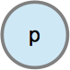
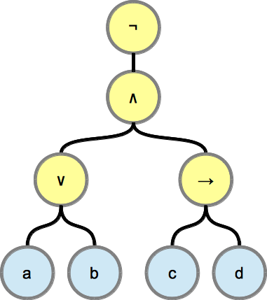
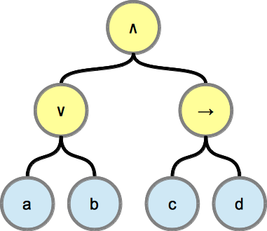
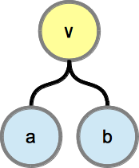
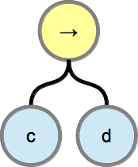
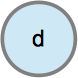
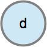

| formula | syntax tree |
|---|---|
| p |  |
| ¬P | |
| P∧P | |
| P∨P | |
| P→P | |
A graphical representation of a propositional formula is the syntax tree. A syntax tree directly mirrors the used grammar rules and can be drawn recursively.
The syntax tree for a propositional formula and its sub-formulas.
|  | ¬((a ∨ b) ∧ (c → d)) |
|  | (a ∨ b) ∧ (c → d) |
|   | a ∨ b, c → d |
 
 |
a, b, c, d |